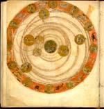

Aratea. Een bewerking van de Latijnse vertaling uit het Grieks van Aratus’ Phaenomena door Germanicus Caesar. Latijn. Handschrift op perkament, 99 ff., 225 x 200 mm. Noordoost-Frankrijk, tweede kwart van de negende eeuw. -- (VLQ 79)
Het Leidse handschrift van de Aratea, waarover meer gezegd wordt bij nummer 59, bevat naast de fameuze miniaturen van de sterrenbeelden een uiterst gecompliceerde illustratie, die meestal het ‘Planetarium’ wordt genoemd. De aarde is erop in het midden geplaatst. Langs de buitenste cirkel staan de sterrenbeelden. Elke nacht weer lijken zij, doordat de aarde in vierentwintig uur om haar as draait, langs het firmament te trekken. Tussen de sterrenbeelden, die elk een periode van een maand markeren, staan de ‘werken van de maand’ afgebeeld, die karakteristiek zijn voor de werkzaamheden van de betreffende maand. Zij komen overeen met de voorstellingen van de zogenaamde Romeinse kalender van het jaar 354, waarvan alleen een heel late kopie bewaard is. De illustrator van het Leidse handschrift, of wellicht al zijn voorbeeld, hebben de functie van die tekeningen niet meer goed begrepen, want ze zijn in de omgekeerde volgorde gegeven.
Voor de geschiedenis van de astronomie zijn vooral de planeten interessant, waarvan de banen om de aarde getrokken zijn. De buitenste baan behoort aan Saturnus; daarbinnen komen achtereenvolgens Jupiter, Mars, de zon (waaromheen twee concentrische cirkels getrokken zijn), Venus, Mercurius en als laatste de maan. De verklarende teksten beschrijven de loop van de planeten naar de bewoordingen van C. Plinius Secundus (23/24-79). De cirkels rond de zon geven de mogelijke banen van Mercurius en Venus weer, die naar een oude, op de Griek Heraclides Ponticus (circa 390-310 v.Chr.) teruggaande traditie ook wel in een baan om de zon werden gedacht.
Door recent onderzoek is plausibel gemaakt dat de hier weergegeven stand van de planeten allerminst toevallig is. Zij komt vrijwel overeen met de stand zoals die op 28 maart 579 kon worden waargenomen. De zogenaamde tabellen van Ptolemaeus maakten het mogelijk haar te berekenen. Waarom juist deze datum gekozen is, is niet bekend. Het betekent wel dat het planetarium terug zou gaan op een zesde-eeuws model. Misschien moet het ontstaan ervan gezien worden tegen de achtergrond van de laatste opbloei van de wetenschappen in Italië in de tijd van Cassiodorus (circa 485 - circa 580, zie nummer 19). Die besteedde in zijn Institutiones nog uitvoerig aandacht aan de astronomie en beschikte over de kennis die voor een dergelijke gecompliceerde voorstelling van het hemelruim noodzakelijk was.
Literatuur
- B.S. Eastwood, ‘Origins and contents of the Leiden planetary configuration [MS. Voss. Q. 79, fol. 93v], an artistic astronomical schema of the early Middle Ages’, in Viator, 14 (1983), p. 1-40.
- Zie ook nummer 59.
| vorige pagina | top pagina |